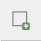
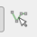
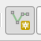

〽️ Créer une Coupe Topographique
Concept : Coupe topographique⚓
profil topographique, profil d'élévation,
Un profil topographique ou une coupe topographique est une méthode de représentation du relief. Contrairement à une carte topographique, un profil topographique est un graphique affichant l'altitude en ordonnée pour tout point d'un segment choisit sur une carte (le trait de coupe). (source : wikipédia)
Il s'agit d'un tranche du relief :la section par un plan vertical de la surface topographique.
On peut habiller la coupe avec des éléments du sur-sol ce qui donnera une coupe paysagère habillée. On peut intégrer des informations de la géologie du sous-sol ce qui donne une coupe géologique.
Conseil : L'exagération verticale (= facteur Z ou = ratio entre échelles verticale et horizontale)⚓
En fonction des besoins, l'échelle verticale (échelle des altitudes) peut être exagérée par rapport à l'échelle horizontale (échelle des distances) pour accentuer le relief.
Si vous faites une coupe technique très zoomé (à grande échelle), il ne faut pas exagérer. C'est un document de chantier qui doit être le plus réaliste possible.
Si vous travaillez sur des grands paysages, très dé-zoomé (à petite échelle), il faut exagérer raisonnablement pour donner une lecture du relief. Par habitude, on exagère d'un facteur 8 au maximum pour des région très plane, avec des reliefs peu marqués. Pour des régions aux relief très marqué, on se contente d'un facteur 2 au maximum.
Truc & astuce : Comment savoir quel est la bonne exagération verticale ?⚓
Bonne question. il n'y a pas de réponse toute faite. Personnellement, je conseilles de réaliser une exagération verticale qui correspond au ressenti que vous avez eu sur le terrain. Vous construisez une coupe topographique ou un bloc diagramme pour rendre compte d'un relief particulier. Or la vue dé-zoomée ou surplombante à tendance à écraser le relief. Si vous observer des montagnes en avion, la perception du relief sera très atténuée. En exagérant raisonnablement l'échelle verticale, on redonne au lecteur l'impression du relief qu'il ressentirait s'il y était.
Il ne s'agit pas de manipulation. On inscrit toujours les échelles verticale et horizontale sur une coupe ou un bloc.
Si nous prenons une coupe topographique de l'Everest sans éxagération verticale, voilà ce que cela donne :
En coupe topographique :
En vue 3D :
Vous trouvez que cela rend justice au plus haut sommet de l'himalaya ?
Alors que si on exagère un brin (x2.5), c'est beaucoup plus illustratif, non ?
En coupe topographique :
En vue 3D :
Conseil : Bref...⚓
Tout ça c'est subjectif, bien évidemment. Retenez que l'objectif c'est de transmettre un message avec votre illustration.
S'il s'agit de présenter précisément les éléments sur une coupe technique à grande échelle (<1 :500), on n'applique aucune exagération.
Source : http://www.compagniedupaysage.com/projects/eco-quartier-dugatte/
S'il s'agit de donner à voir un grand territoire, un grand paysage à petite échelle (>1 :10 000), on applique une exagération raisonnable qui rend justice à votre perception subjective de la pente. pour une plaine très plate et monotone : on exagère jusqu'à x8. Pour un massif montagneux jeune, on exagère de x2 à x3. L'objectif est que l'illustration corresponde à ce que vous avez ressenti sur le terrain. l'exagération permet de corriger l'effet d'écrasement du relief lié à la petite échelle. Plus l'échelle nous éloigne du sol, plus l'effet d'écrasement se fait sentir, et plus il faut exagérer l'altitude.
Source : Exemple de coupe schématique caractérisant une séquence paysagère dans la Vallée du Loir. © Extrait de la charte architecturale et paysagère du Pays de la Vallée du Loir, 2013. Le plan local d'urbanisme français : un instrument orienté de pédagogie citoyenne du paysage - Scientific Figure on ResearchGate. Available from: https://www.researchgate.net/figure/Exemple-de-coupe-schematique-caracterisant-une-sequence-paysagere-dans-la-Vallee-du-Loir_fig8_326645870 [accessed 19 May 2025]
Vous allez me dire qu'il manque une plage d'échelle entre 1 :500 et 1 :10000, et vous avez raison. Pour cette plage d'échelle vous êtes libre de faire comme bon vous semble, car cela dépend de l'objet de votre illustration.Est-elle « technique » ou plus « subjective » ?
QGIS propose de visualiser un projet SIG sous la forme d'un profil d'élévation (ou coupe topographique). C'est donc un outil de visualisation que l'on retrouve dans le menu « vue ».
Avant toute chose, il faut indiquer à QGIS où se trouve l'information altimétrique, où se trouve le SIG.⚓
Selon les version de QGIS, il faut intégrer ce renseignement à différents endroit. Soit vous l'ajouter comme une nouvelle couche dans le panneau profil d'élévation avec l'icone.
Soit vous devez directement renseigner ce paramètre dans les propriétés générales de votre projet :
Soit vous avez déjà une couche vectorielle de polylignes dans laquelle sont cartographiés vos traits de coupe⚓
dans ce cas, c'est très simple, il suffit d'en sélectionner un avec 
Soit vous voulez faire un trait de coupe à main levé.⚓
Dans ce cas, vous n'avez qu'à le dessiner avec 
Attention : dans ce cas, le trait de coupe ne sera pas enregistré dans votre projet.
La coupe topographique obtenue peut être exportée sous différents formats :
Le résultat est rarement publiable en l'état. Il est conseillé d'utiliser le fichier image obtenu pour redessiner une belles coupe topographique habillé avec votre logiciel de DAO préféré !